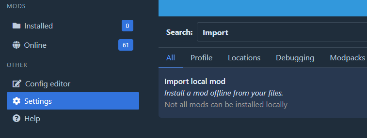
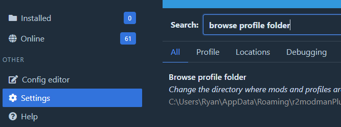

Depending on your mod type, mods you find outside of r2modman and Thunderstore mod manager need to be installed differently.
Importing supported mods
If you happen to obtain a mod from somewhere else and would like to install it, please follow the below instructions for steps. For specific mod installation instructions that are packaged differently, see Specific Mod Installation.
The main way to install other mods not found through r2modman is to use the program's Import Local Mod feature.
Below is an image showing the button to import local mods:

Warning
Mods must be formatted in a certain way to be eligible for importing. If your package is not in this format, you cannot use the import feature.
Please see the Files Eligible for Import document for more information on which files you are able to use the import local mod feature with.
Files imported by r2modman are placed into the BepInEx/plugins/ folder of the current profile under their own named folder, unless stated by a folder otherwise like with Sideloader mods.
Importing unsupported mods
If you do not have a .deli file, then installation is a little different. Please see Mod Types the terms used below.
From r2modman settings, search for Browse Profile Folder and click on it. A folder should have appeared that looks like this:
[Profile name you are using]/
BepInEx/
mods.yaml
...

Determine the mod type you are using, and extract the files to their correct paths. The BepInEx/ folder is contained inside of your profile folder, which you just opened.
Note
If the below folders are not present, let the game make them for you. If they are not being created, make sure that you have run the game at least with Sideloader or Otherloader installed. Failure to do so will result in all of your mods within these folders to be wiped.
Sideloader mods go into the BepInEx/Sideloader/ folder.
Asset bundles can go in two different places depending on what functions you want:
If you want to keep profile independence:
BepInEx/plugins/../LegacyVirtualObjects/./../just means any folder. It's recommended to make yours recognizable, like_LVO. Example:BepInEx/ plugins/ _LVO/ LegacyVirtualObjects/ amod bmod bmod.manifestIf you want the mod to load no matter what (as long as OtherLoader is installed), then use
H3VR/LegacyVirtualObjects/. This folder is in the root folder, and should be avoided if possible.